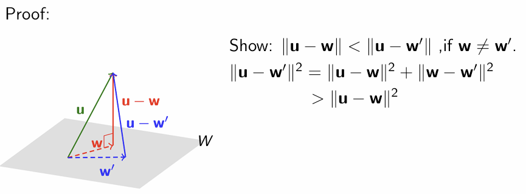

(a) S is said to be an orthogonal set if any two vectors in S are orthogonal.
(b) Furthermore, if every vector in S has unit length (i.e. norm 1), then S is said to be an orthonormal set.
Clearly, we can get an orthonormal set by normalizing each vector of an orthogonal set.
Orthogonal basis
In general, suppose B=v1,v2,...,vk is an orthogonal basis for a subspace V of Rn. Then for any v∈V, we have:
v=∑∣∣vi∣∣2v⋅vivi
Furthermore, if the basis B is orthonormal, the above expression can be simplified to:
v=∑(v⋅vi)vi
Prop: Every orthogonal set of non-zero vectors is linearly independent.
Gram Schmidt process
Suppose {u1,u2,...uk} is a basis for a subspace W of Rn. The Gram Schmidt process turns this basis into an orthogonal basis {v1,v2,...vn} by: v1=u1vi=ui−k=0∑i−1∣∣vk∣∣ui⋅vkvkfor2≤i≤k
Orthogonal Complement of S:
Definition:
Let S be a subset of Rn.
The Orthogonal complementof S, denoted by S⊥ is the set of vectors in Rn that are orthogonal to every vector in S.
i.e. S⊥={v∈Rn:∀u∈S,v⋅u=0}
prop:
Let S be a subset of Rn, then S⊥is a subspace of Rn.
Let S be a finite subset of Rn. Then S⊥=(SpanS)⊥
Let A be a matrix.Then(RowA)⊥=NullA. (Here we identify the row vectors in $Row\ A as column vectors in the natural way.)
Orthogonal Decomposition Theorem
Definition
Let W be a subspace of Rn.
Then every vector u in Rn can be written in the form u=w+z where w∈W and z∈W⊥ in a unique way.
prop:
dimW+dimW⊥=n
B∪B′is a basis for Rn, where B is a basis for W and B′ is a basis for W⊥.
Orthogonal Projection
Let W be a subspace of Rn. The orthogonal projection function UW :Rn→Rn is a linear transformation. The standard matrix PW of UW is given by: PW=C(CTC)−1CT, where C is a matrix whose columns form a basis for W.
And we have:
Let C be a matrix whose columns are linearly independent. Then CTC is invertible.
prop:
UW(u) is the vector in W that is closest to u.
Least Squares Fitting:
There are n points (x1,y1),(x2,y2),...,(xn,yn) on the plane.We use square deviation E to describe the fitting level of the straight line y=a0+a1x: E=i=1∑n[yi−(a0+a1xi)]2=y1−(a0+a1x1)y2−(a0+a1x2)⋮yn−(a0+a1xn)2=∣∣y−(a01+a1x)∣∣2
Hence we want to look for the vector in Span{1,x} that is closest to y,
naturally, we consider the orthofonal projection.
根据线性代数理论, y 在子空间Span{1,x}上的正交投影是最小化误差∣∣y−p∣∣的唯一解
More generally, finding the 'Least Squares Fitting' is equivalent to finding the 'best approximation' of Ax=b, where: A=11...1x1x2...xn,b=y1y2...yn,x=[a0a1]
It's equivalent to the 'best approximate solution' z so that Az=b′ is as close to b as possible. This amounts to solving the equation Az=b′ where \mathbf{b}^′istheorthogonalprojectionof\mathbf{b}onCol\ A$. There are two cases:
There are infinitely solutions of Ax=b
The form of the solution can be x=x0+z
where x0 is a particular solution of the linear equation z is the general solution of the linear equation(Az=0, i.e. z∈Null(A))
We want to find the least norm solution, which means the z is clost to 0
There are no solution of Ax=b
So there also be infinitely many best approximate solutions to Ax=b′